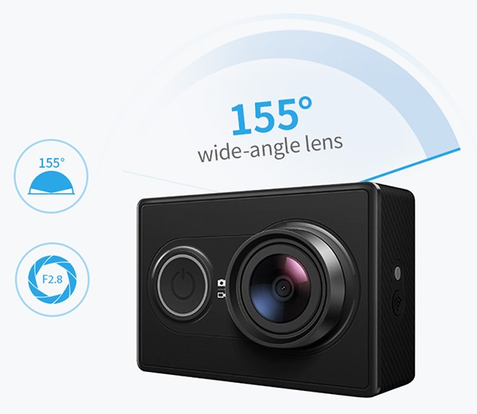
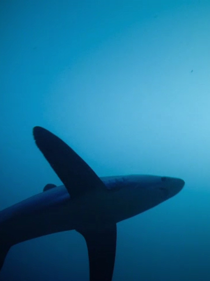
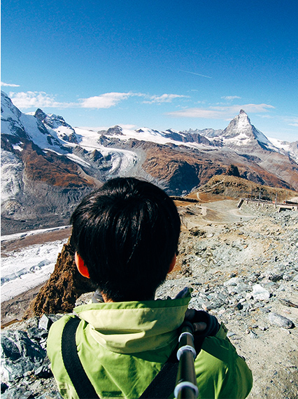
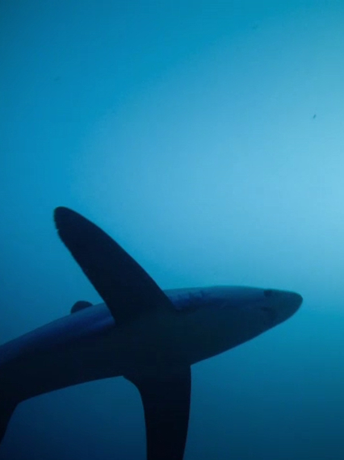
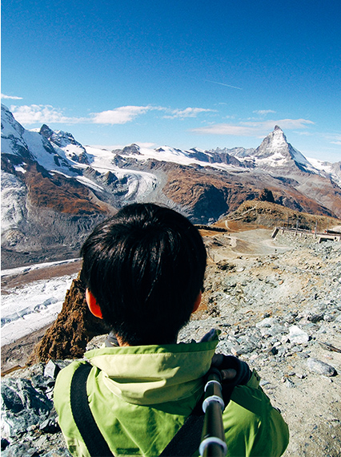

YI Action Camera
Маленькая, но очень мощная!
Full HD 1080p видео | Разрешение 16 MP | Ультра широкий угол обзора

Маленькая, но очень мощная!
Full HD 1080p видео | Разрешение 16 MP | Ультра широкий угол обзора
Станьте режиссером, фотографом и монтажером в одном лице с экшн камерой YI. С компактной и легкой Action Camera YI вы можете снимать видео в высоком разрешении и делать кристально четкие снимки в разрешении 16 мегапикселей.
Предусмотренные возможности соединения через Wi-Fi и Bluetooth позволяют вам вести прямые трансляции, редактировать видеозаписи и фотографии, а так же мгновенно делиться фото и видео через смартфон.
Ультра-широкоугольный объектив 155°
Расширьте свою точку зрения снимая ультраширокоугольным оптическим объективом. Благодаря объективу с углом 155°, YI Action Camera создает потрясающие широкоугольные видеоролики вашего окружения.

Когда дело доходит до мощности и производительности, аппаратное обеспечение камеры говорит само за себя. Ambarella A7LS ведущий в мире процессоров обработки изображений для спортивных камер, YI Action Camera плавно записывает видеоролики и фотографии Ultra-HD с улучшенной стабилизацией изображения и уменьшением шума. Снимайте до 90 минут видеоматериала без потери мощности.
Вы любите активно проводить время? Наши аксессуары сделаны для вас. Водонепроницаемые, легко монтируются и совместимы друг с другом. Они освобождают руки для творчество. Благодаря им вы снимите свое восхождение или сделаете фотографию осьминога. Мы постоянно добавляем новые аксессуары, чтобы дать вам больший простор для активной жизни.
 



С помощью приложения Action Camera Yi, ваша работа съемка станет еще проще и интересней! Приложение позволяет снимать потоковое видео в реальном времени, содержит учебные пособия, упрощает использование и настройку всех функций вашей камеры. Полностью контролируйте свою камеру, снимайте видео и фотографии удаленно и настраивайте параметры в приложении. Подключите камеру по Wi-Fi и дейте более крутые снимки, предварительно просмотрев их на телефоне. Присоединяйтесь к нам в социальных сетях и сообществу пользователей YI Action, чтобы увидеть последние и самые лучшие клипы и фотографии от пользователей Yi.